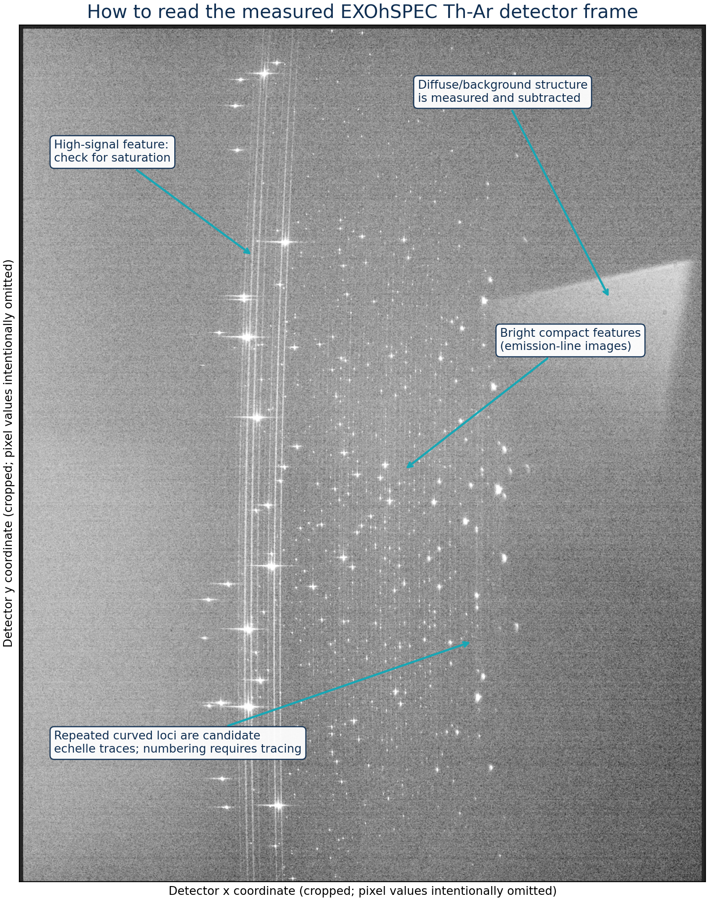
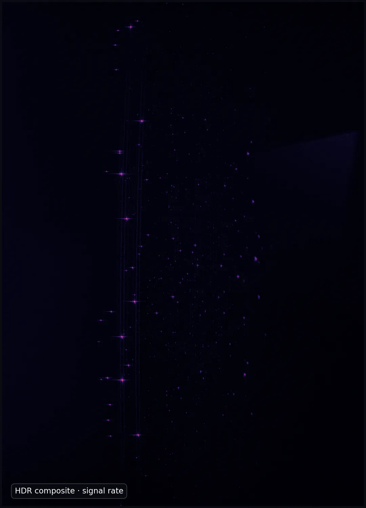
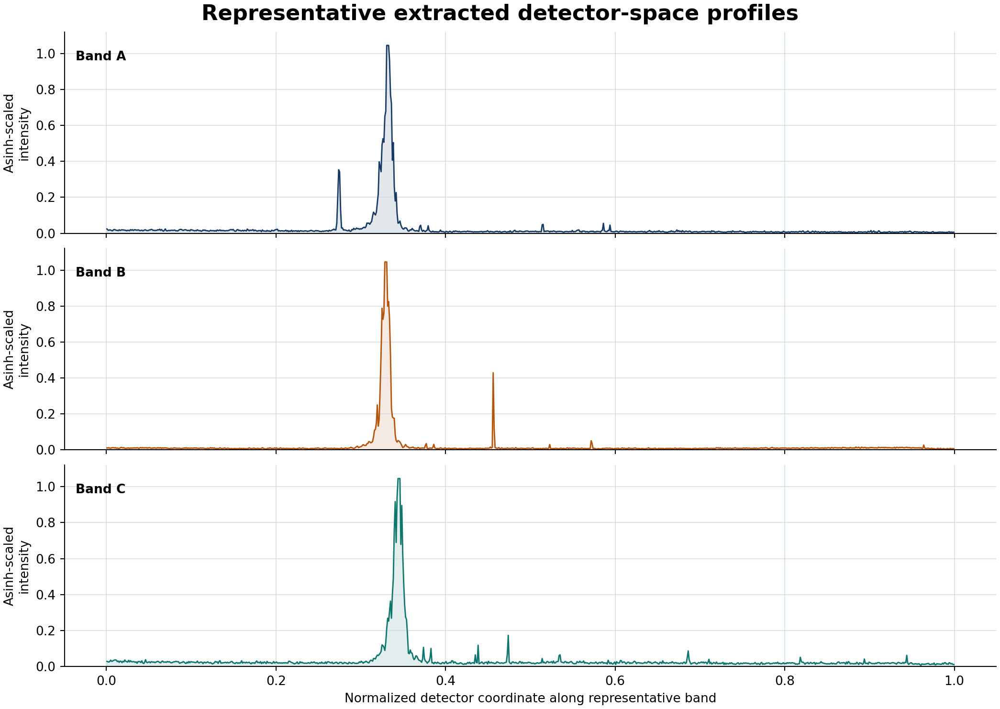
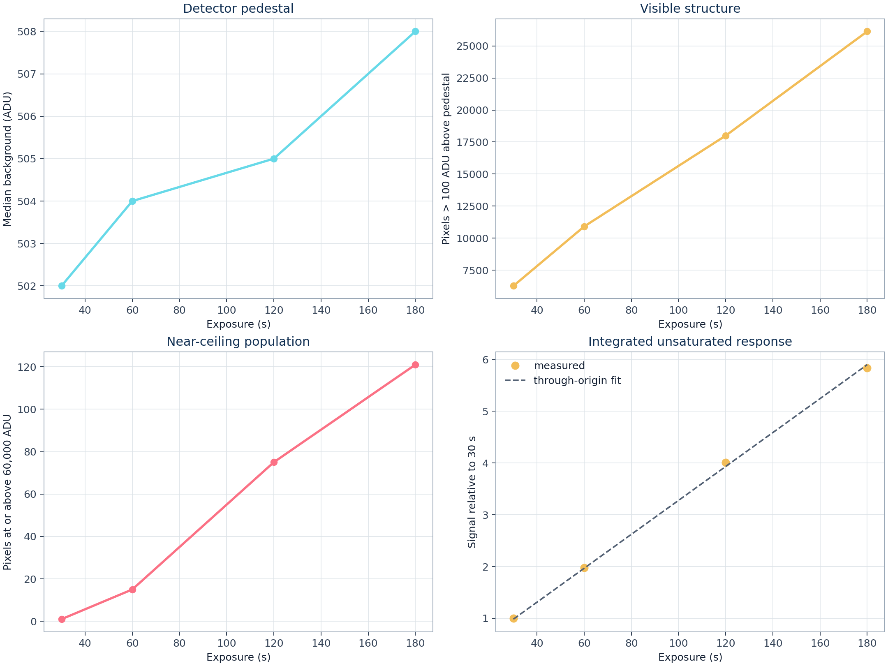
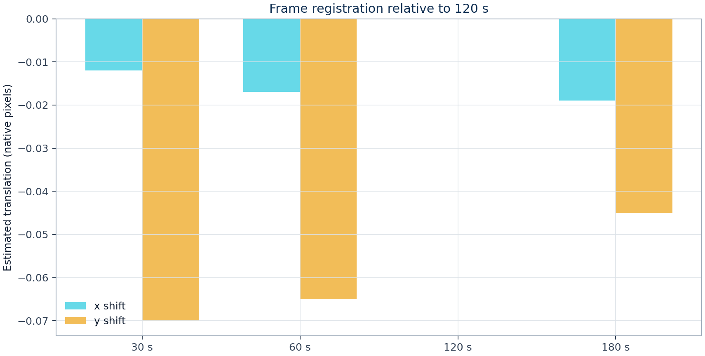
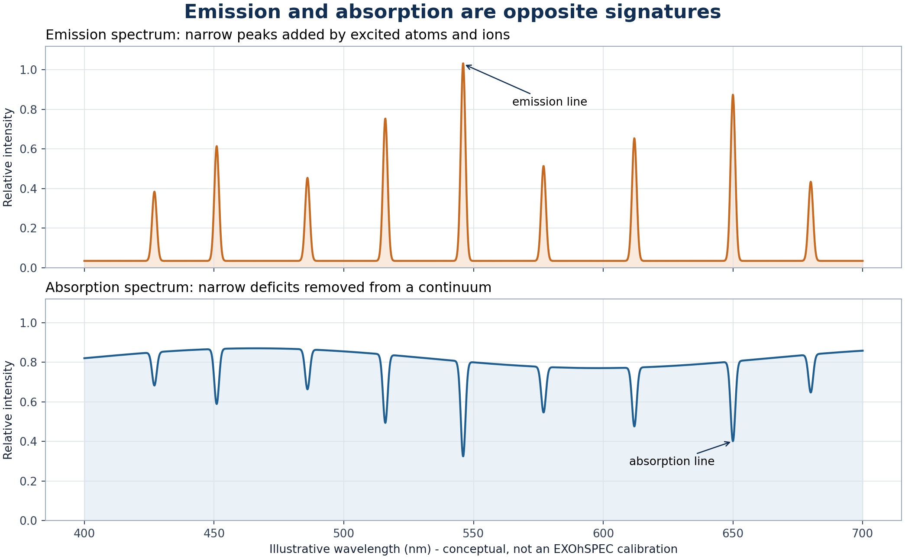

Detector-domain characterization of thorium-argon calibration exposures
University of Hertfordshire · Exoplanet high-resolution spectroscopy
Download the 11-page technical report (PDF)Abstract
Four thorium-argon lamp frames were compared to determine the exposure regime that best preserves bright-line headroom while revealing faint structure. The unsaturated integrated response is close to proportional to exposure time (R2 = 0.9993), while the population above 60,000 ADU rises from 1 pixel at 30 s to 121 pixels at 180 s. Translational registration is stable within an estimated 0.071 native pixel under a phase-correlation model. A 120 s frame is therefore the strongest single-exposure compromise; a four-frame HDR estimator is preferred for visualization and detector-domain feature finding. No atomic wavelengths are assigned because a validated order trace and dispersion solution are not yet available.
The measured two-dimensional spectral format
The stretch below is intentionally stronger than a conventional linear display. It exposes faint features, structured background, bright cores, and the geometry of the recorded format on the same panel.


Interactive detector-space spectrum
A representative band is summed across its spatial width and plotted as relative signal rate. Change exposure to examine how faint peaks emerge and bright peaks approach the detector ceiling.

Exposure response and stability
Linearity
The common unsaturated signal mask follows exposure time with R2 = 0.999276. The largest fractional departure from the through-origin model is 1.994%.
Headroom
Near-ceiling pixels increase monotonically: 1, 15, 75, and 121 at 30, 60, 120, and 180 s. Longer integrations gain faint features but progressively lose bright-core information.
Registration
Phase correlation estimates a maximum translation of 0.071 pixel relative to the 120 s frame. This is a repeatability diagnostic under a translation-only model, not a complete stability budget.
HDR contribution
The 180 s frame supplies most valid source pixels; 120, 60, and 30 s frames replace 49, 57, and 14 source-mask pixels respectively where longer integrations approach the adopted ceiling.

| Exposure | Background | Robust σ | Bright pixels | ≥60,000 ADU | Integrated signal / 30 s |
|---|---|---|---|---|---|
| 30 s | 502 ADU | 2.97 ADU | 6,267 | 1 | 1.000 |
| 60 s | 504 ADU | 4.45 ADU | 10,906 | 15 | 1.980 |
| 120 s | 505 ADU | 4.45 ADU | 17,998 | 75 | 4.012 |
| 180 s | 508 ADU | 4.45 ADU | 26,132 | 121 | 5.841 |

Why a thorium-argon lamp works

Hollow-cathode emission
An electrical discharge in low-pressure argon creates energetic ions and electrons. Ion bombardment releases thorium from the cathode by sputtering; collisions excite neutral and ionized species. Radiative de-excitation then produces narrow emission features. The pattern acts as a ruler only when detector centroids are matched to independently measured reference wavelengths.
Why thorium is useful
Thorium produces a dense optical line spectrum. NIST Standard Reference Database 161 includes reference wavelengths for more than 20,000 Th I, Th II, and Th III features, drawing on high-resolution Fourier-transform measurements. The dominant terrestrial isotope, 232Th, has a 1.40 × 1010 year half-life; its dominance reduces the isotopic complexity encountered in many other elements.
Why argon is present
Argon sustains the discharge and produces additional Ar I, Ar II, and Ar III features. Some argon lines can be extremely strong, which helps acquisition but creates dynamic-range and contamination problems. The exposure ladder demonstrates that conflict directly: sensitivity to faint structure improves while bright cores approach full scale.
Abundance and availability
Thorium is naturally distributed through crustal minerals rather than being an artificial laboratory element. USGS estimates about 10.5 mg kg-1 in the upper continental crust, with monazite an important source mineral. Argon is far more accessible: NOAA gives 0.934% by volume in dry air, and atmospheric argon is about 99.6% 40Ar. Geological abundance does not determine spectral usefulness; the relevant properties are line density, wavelength accuracy, intensity distribution, and stability.
Astronomical applications
Th-Ar exposures establish an absolute wavelength scale, monitor instrumental drift, support radial-velocity measurements, and diagnose spectral-format changes. In exoplanet spectroscopy, an apparent Doppler shift is meaningful only if detector motion and wavelength calibration are controlled well below the stellar signal being sought. Modern systems may combine Th-Ar absolute anchors with dense Fabry-Perot references or laser-frequency combs.
Methods, assumptions, and boundary of inference
- Safe ingestion. The two-dimensional primary image is memory-mapped. Only exposure time is permitted into public metadata; raw headers and exact detector geometry are not serialized.
- Background. The median of a sparse full-frame sample estimates the pedestal. Scatter is 1.4826 times the median absolute deviation.
- Public crop. Bright-pixel coordinate percentiles reject isolated events and define a padded region. Published axes are normalized.
- Response mask. A common mask is formed from the 180 s signal-rate image, dilated to capture the local point-spread footprint, and restricted to pixels below 55,000 ADU in every exposure.
- Linearity. Pedestal-subtracted counts inside that mask are summed and fitted through the origin against exposure time.
- Registration. Log-transformed, block-averaged images are compared by phase correlation. The model tests translation only; rotation, scale, and local distortion are not estimated.
- HDR. For each pixel, the longest exposure below 60,000 ADU is converted to relative ADU s-1. Shorter exposures replace near-ceiling values.
- Feature finding. Local maxima are ranked after mild Gaussian smoothing. The displayed catalogue is capped at the 500 strongest morphological candidates and is explicitly not an atomic line list.
What is still required for wavelength calibration
A scientifically defensible wavelength solution needs traced orders, extracted one-dimensional spectra, an approximate dispersion model, matching to NIST reference lines, blend and outlier rejection, a two-dimensional polynomial or physical dispersion solution, and residual analysis by order and wavelength. Until this chain is complete, the project does not label peaks as Th I, Th II, Ar I, or any wavelength in angstroms.
References and data provenance
- Lhospice, E. et al. (2019). EXOhSPEC folded design optimization and performance estimation. Proceedings of SPIE.
- University of Hertfordshire. EXOhSPEC project page.
- Nave, G. et al. Spectrum of Th-Ar Hollow Cathode Lamps. NIST SRD 161, DOI 10.18434/T4S01V.
- Redman, S. L., Nave, G. & Sansonetti, C. J. (2014). The Spectrum of Thorium from 250 nm to 5500 nm. ApJS 211(1).
- Errmann, R. et al. (2020). HiFLEx: A Highly Flexible Package to Reduce Cross-dispersed Echelle Spectra. PASP 132, 064504.
- USGS. Thorium in the upper continental crust and soils.
- NOAA. Composition of the dry atmosphere.
- CIAAW. Atomic weight and isotopic composition of thorium.
Acknowledgements
This work was carried out by Biswajit Jana in the context of EXOhSPEC instrumentation research. The author acknowledges Prof. Hugh Jones for supervision of the EXOhSPEC research and Prof. Bill Martin for supervision of the optics and laboratory work at the University of Hertfordshire.